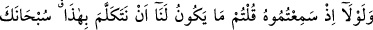
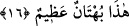
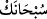

kendisini bundan alıkoymayan kimseler hakkında indiğini zannediyorum” demiştir.
Tirmizî de der ki: “Kendi üzerinde cereyan eden boş iddiâları önemsiz gören kimse
Allah’ın büyülttüğünü küçük saymıştır. Çünkü Allah: “Siz onu önemsiz sayıyorsunuz
ama o Allah katında büyüktür” buyurmuştur.”
Eğer mertsen, kendi insanlığından/cömertliğinden dem vurma
Her süvari meydana top sürmez
16. Onu duyduğunuzda: “Bunu konuşup yaymamız bize yakışmaz. Hâşâ! Bu, çok
büyük bir iftirâdır” demeli değil miydiniz?
Bu iftirâyı ortaya atanlardan ve onlara uyanlardan “onu duyduğunuzda:” onları
yalanlamak ve işledikleri günahtan dolayı kendilerini korkutmak üzere “bunu” bu sözü
“konuşup yaymamız bize yakışmaz.” bizim böyle bir şey yapmamız mümkün değildir.
Hiçbir şekilde bizden bu sâdır olmaz.
Bu söz, doğru ve istikâmet üzere o iftirânın varlığını değil, onu konuşmanın varlığını
reddetmektedir.
“Hâşâ!” “
” lâfzı, bu iftirâyı ağızlarına dolayanlara karşı hissedilen taaccübü
ifâde için kullanılmıştır. Aslında Allah Teâlâ’nın taaccübe şâyân bir san’atını görünce,
bu ve benzeri şeyleri yapmanın O’na asla zor gelmeyeceğini belirtmek maksadıyla
kullanılan bir sözdür. Daha sonra şaşılacak her durumda kullanılan bir söz hâline
gelmiştir. Veya burada bu, Allah Teâlâ’yı sevgili peygamberinin zevcesini günahkâr
yapmaktan tenzih için zikredilmiştir. Çünkü Peygamber eşinin böyle bir günaha
teşebbüsü insanları ondan soğutur, uzaklaştırır. Ayrıca bu, evlilikten beklenen gayeyi de
ortadan kaldırır. Peygamber hanımlarının kâfir olması meselesi ise daha önce geçmişti.
Hak Teâlâ, Peygamberin muhterem eşini suçlayan kimseden berîdir.
“Bu,” hiç kimsenin konuşması doğru olmayan bu iftirâ “çok büyük bir iftirâdır”
demeli değil miydiniz?
et-Te’vîlâtü’n-Necmiyye’de açıklandığına göre “bühtân” bir kimse aleyhinde
yapmadığını yaptı demektir. Buna göre mânâ ‘onu ağzına almak Allah katında büyük bir
yalandır’ demek olur. Ya da şaşılan şeyin, yapmadığı şeyi ‘yaptı’ diye söylenen şahsın
büyüklüğü sebebiyle ona şaşmak demektir.
Ebû Saîd Harrâz (k.s.)’un “Ebrârın iyilikleri, mukarrabîne göre günahtır.” dediği
gibi günahların büyüklüğü ve küçüklüğü sâdır oldukları şahıslara göre olduğu gibi,
ilgili olduğu şeylere de göredir.